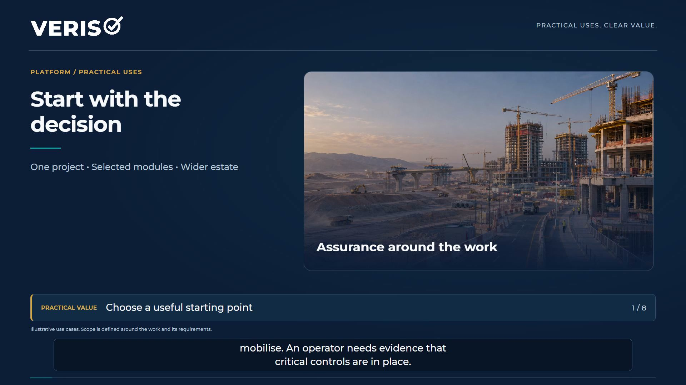
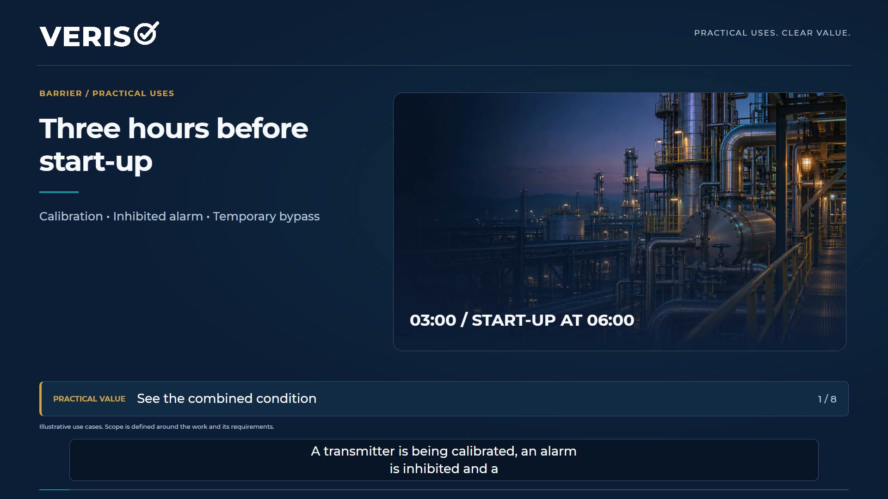
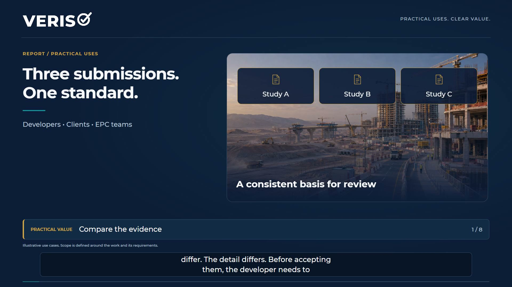

Video library
Veriso, from explanation to application.
Six films covering Veriso Platform, Process and Barrier, and Barrier Report: three product explainers and three practical scenarios, in English and Arabic.
Practical scenarios
Illustrative applications showing how information and evidence support review and decisions. These are scenarios, not client case studies.

2:26Veriso Platform in practice
From contractor selection and mobilisation to field controls, welfare and management-system improvement. See how selected modules support different decisions.
Watch the scenario
2:17Veriso Barrier in practice
Follow a start-up scenario through shared dependencies, impairments and operating decisions, then explore fleet, insurance and lender reviews.
Watch the scenario
2:20Barrier Report in practice
Compare contractor studies, review submissions and identify recurring gaps across an estate. Structured evidence supports the responsible engineers’ decisions.
Watch the scenarioProduct explainers
Understand each product and how it works, alongside its practical applications.
 7:15
7:15Veriso Platform
Veriso Platform reads your policies, procedures and operational records, compares them with applicable requirements and field evidence, and identifies gaps. It helps teams prioritise actions, draft improvements and role-specific training, assign responsible owners, and check whether the changes work in practice.
Watch the film 5:45
5:45VERISO | Process and Barrier
Connect the intent of the hazard study with operating protection, checks, changes and decisions with clear responsibility.
Watch the film 2:03
2:03VERISO | Barrier Report
Turn a hazard study into a linked report showing hazards, barriers and the questions requiring engineering review.
Watch the film